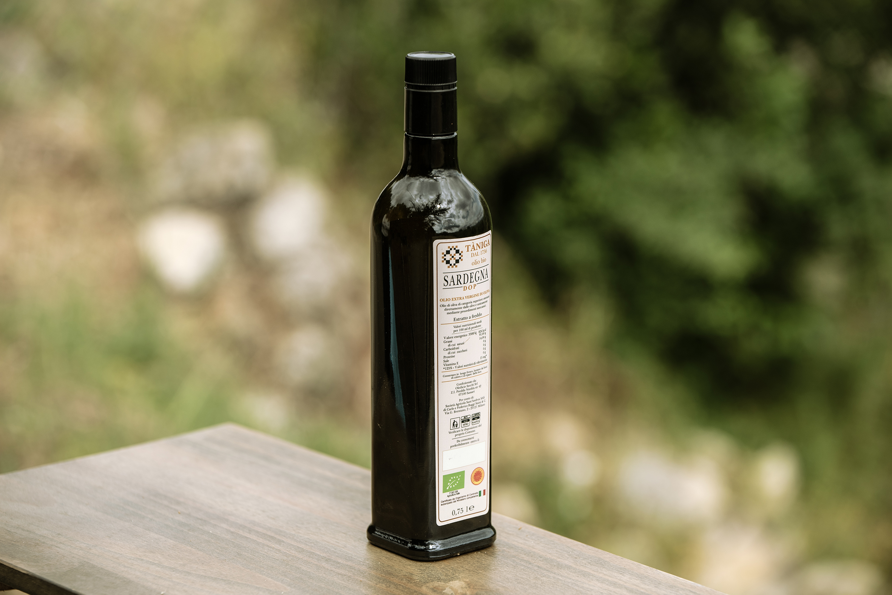
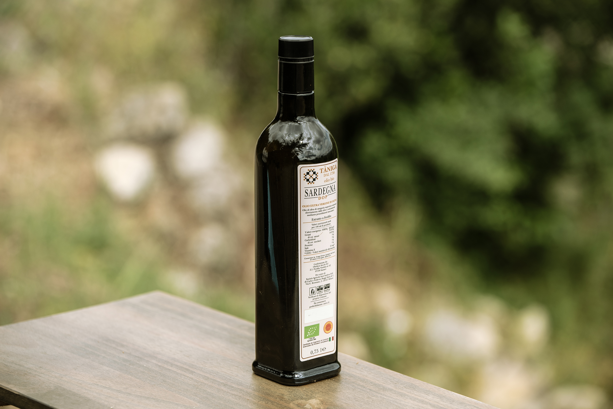

.png)
olio TÀNIGA bio
OLIO EXTRA VERGINE D'OLIVA
SARDEGNA DOP
Tàniga extra-virgin olive oil BIO – DOP comes from the secular olive trees located in the lovely sunny hills of northern Sardinia, overlooking the deep blue sea of the Asinara Gulf. The production of Tàniga olive oil dates back to 1756, when the pressing of the “bosana” olives first began.
The oil is a deep golden green color and is characterized by a deliciously intense flavor with a slight aftertaste of thistle, artichoke and a variety of Sardinian herbs.

 

State of the art machinery belonging to the "Oleificio Secchi" olive mill presses the olives on the very same day they have been picked. The entire procedure is carried out at a low temperature in order to guarantee the very high quality oil that is synonymous with the Tàniga farm.
Tàniga oil is an ideal dressing for either fish or meat and a must for salad and bruschettas. Simply poured onto some fresh bread to savor it in all its glory, the characteristic Sardinian Carasau bread is a delicious example. It's also excellent for cooking and one of the healthiest for frying, as it resists high temperatures. It fully enhances Mediterranean cuisine.


Società agricola Sant’Andrea s.a.s. di Carlo e Federico Baggi Sisini & C.